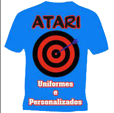

@if (authStore.isMenuBarActive()) {
  <nav
    class="sticky top-0 flex justify-between items-center gap-1 w-full bg-gray-900 py-2 px-3 z-10 text-sm">
    <div class="flex items-center is-justify-between px-4 gap-4 w-full">
      <a routerLink="/login" class="flex items-center">
        
      </a>
      <div class="is-hidden-1000px">
        <div class="flex gap-2">
          @for (link of links; track $index) {
            <div
              class="relative text-white mx-1 menu-container before:absolute before:-top-1 before:hover:-left-1 before:hover:w-full before:hover:h-full before:hover:bg-gray-700 before:hover:rounded-lg before:hover:p-4">
              <div class="flex h-full items-center justify-between cursor-pointer px-1 toogle-link">
                <p class="mb-1 font-bold z-10">{{ link.name }}</p>
                <mat-icon class="z-10" #linkIcon>keyboard_arrow_down</mat-icon>
                <div
                  class="absolute flex flex-col px-1 border-gray-400 rounded-md bg-gray-100 box-link top-9 -left-1 z-100"
                  #linkItem>
                  @for (sublink of link.sublinks; track $index) {
                    <a
                      [routerLink]="sublink.routerLink"
                      class="hover:text-white whitespace-nowrap text-black hover:bg-gray-800 rounded-md px-4 py-1 first:mt-2 last:mb-2">
                      {{ sublink.name }}
                    </a>
                  }
                </div>
              </div>
            </div>
          }
        </div>
      </div>
      <div class="mobile-menu-display">
        <mat-icon (click)="onShowNavBar(true)" class="text-white">menu</mat-icon>
        @if (isNavBarActive) {
          <div
            class="absolute top-0 left-0 flex flex-col gap-2 w-full h-screen z-[200] bg-slate-50 p-4">
            <div class="flex mb-2 justify-between items-center gap-2">
              <div class="flex items-center gap-2">
                <mat-icon class="font-semibold">menu</mat-icon>
                <h1>Menu</h1>
              </div>
              <app-button-close (click)="onShowNavBar(false)"></app-button-close>
            </div>
            @for (link of links; track $index) {
              <div
                (click)="toogleLink($index)"
                (keypress)="toogleLink($index)"
                tabindex="0"
                class="flex flex-col cursor-pointer toogle-link">
                <div class="flex justify-between items-center bg-gray-200 rounded-md p-2">
                  <p class="mb-1 font-bold z-10">{{ link.name }}</p>
                  <mat-icon class="z-10" #linkIcon>keyboard_arrow_down</mat-icon>
                </div>
                <div
                  [ngClass]="links[$index].isColapsed ? 'h-full' : 'h-0'"
                  class="transition-[height] duration-200 ease-in-out overflow-hidden">
                  @for (sublink of link.sublinks; track $index) {
                    <a [routerLink]="sublink.routerLink" class="block text-black px-4 p-2">
                      {{ sublink.name }}
                    </a>
                  }
                </div>
              </div>
            }
          </div>
        }
      </div>
    </div>
    <div class="is-hidden-1000px flex items-center gap-5 text-white">
      <app-tooltip position="bottom" description="Notificações">
        <div
          content
          class="flex items-center relative cursor-pointer before:absolute before:-top-1 before:hover:-left-2 before:hover:bg-gray-700 before:hover:rounded-lg before:hover:px-4 before:hover:py-3">
          <mat-icon aria-label="Notifications" class="text-sm z-10">notifications</mat-icon>
        </div>
      </app-tooltip>
      <app-tooltip position="bottom" description="Central de ajuda">
        <div
          content
          class="flex items-center relative cursor-pointer before:absolute before:-top-1 before:hover:-left-2 before:hover:bg-gray-700 before:hover:rounded-lg before:hover:px-4 before:hover:py-3">
          <mat-icon aria-label="Central de ajuda" class="text-sm z-10">help</mat-icon>
        </div>
      </app-tooltip>
      <app-tooltip position="bottom" description="Configurações">
        <div
          content
          class="flex items-center relative cursor-pointer before:absolute before:-top-1 before:hover:-left-2 before:hover:bg-gray-700 before:hover:rounded-lg before:hover:px-4 before:hover:py-3">
          <mat-icon aria-label="settings" class="text-sm z-10">settings</mat-icon>
        </div>
      </app-tooltip>
      <span class="border hover:bg-gray-700 px-3 py-1 rounded-full text-sm cursor-pointer">RH</span>
    </div>
  </nav>
}
